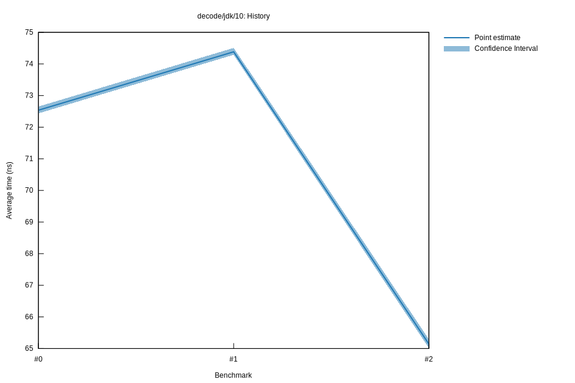

# 22022-10-16T20:17:48+03:00
|
Lower Bound |
Estimate |
Upper Bound |
| Value: |
65.01ns |
65.14ns |
65.29ns |
| Throughput: |
234.71MiB/s |
234.24MiB/s |
233.71MiB/s |
| Change in Value: |
-12.278% |
-11.925% |
-11.582% |
| Change in Throughput: |
+13.997% |
+13.540% |
+13.099% |
No change in performance detected.
# 12022-10-16T17:35:14+03:00
|
Lower Bound |
Estimate |
Upper Bound |
| Value: |
74.29ns |
74.38ns |
74.51ns |
| Throughput: |
205.40MiB/s |
205.14MiB/s |
204.80MiB/s |
| Change in Value: |
+0.6800% |
+1.8756% |
+2.6885% |
| Change in Throughput: |
-0.6754% |
-1.8411% |
-2.6181% |
No change in performance detected.
# 02022-10-15T17:24:23+03:00
|
Lower Bound |
Estimate |
Upper Bound |
| Value: |
72.44ns |
72.54ns |
72.65ns |
| Throughput: |
210.65MiB/s |
210.36MiB/s |
210.03MiB/s |